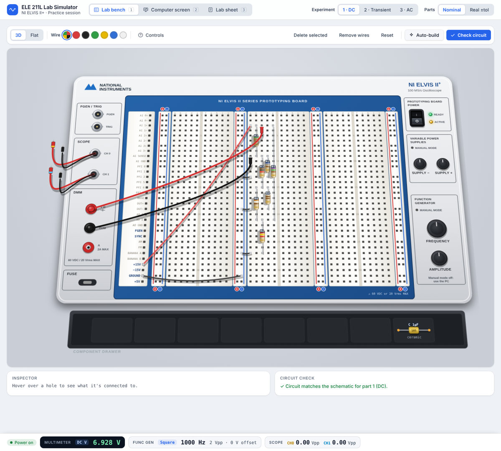

ELE 211L Lab Simulator
An NI ELVIS II+ workstation in the browser. You wire a breadboard, probe it with the DMM and scope, and run DC, RC-transient and AC experiments. A real circuit solver computes the readings.
Computer Engineering student at the American University of Sharjah. Here are the things I've built and vibe-coded.

An NI ELVIS II+ workstation in the browser. You wire a breadboard, probe it with the DMM and scope, and run DC, RC-transient and AC experiments. A real circuit solver computes the readings.